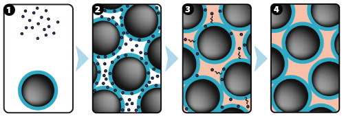
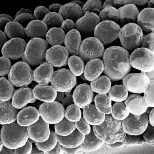
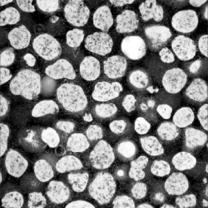
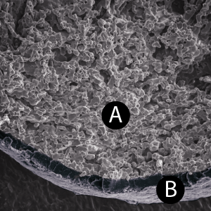
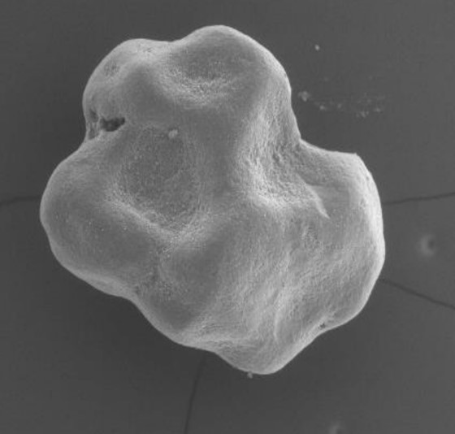
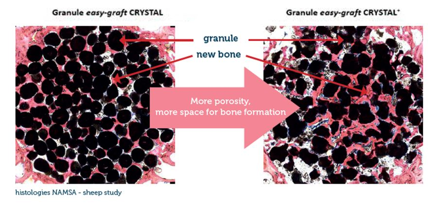
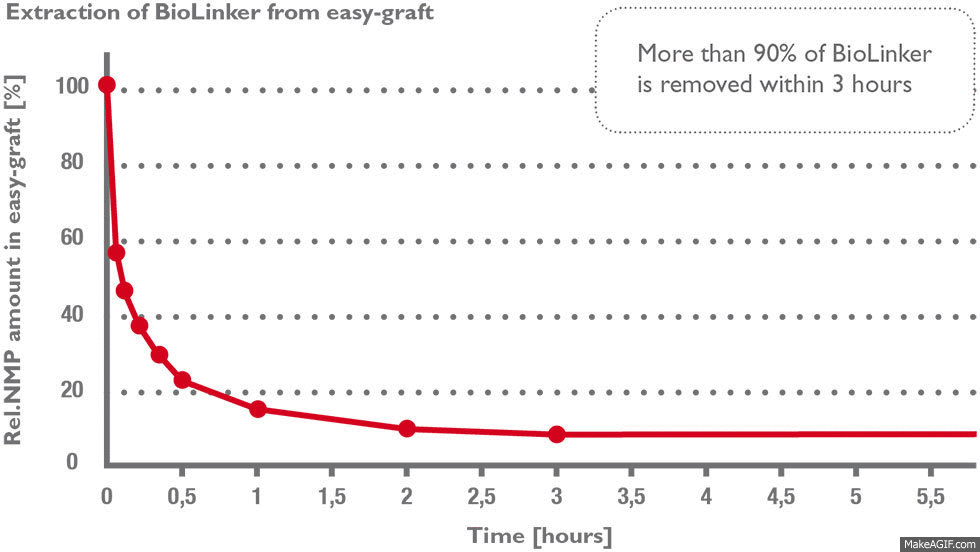
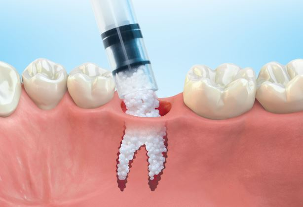
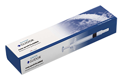
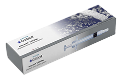

-
In their forward thinking article (Periodontology 2000, Oct 2003), Professors Hämmerle & Jung stated:
..."to simplify clinical handling, new materials should comprise a matrix with optimal cell ingrowth capacities and good mechanical properties, providing space for tissue regeneration. No membrane and no specific procedures for mechanical fixation should be necessary...
...the use of synthetic materials would result in lower surgical risks and lower morbidity in augmentation procedures and would represent an important step forward in simplifying bone regeneration techniques."
With GUIDOR easy-graft and its stunning handling and technical features such forward thinking considerations become reality.
The GUIDOR easy-graft difference

1: GUIDOR easy-graft system contains a pre-filled syringe of polymer coated granules (coloured blue in the illustration and labeled B in the scanning SEM image in the 'Granule Porosity' section below) together with a separate ampoule of polymer activator (BioLinker, as shown by dots in images 1).
2: When added to the syringe, BioLinker softens the polymer coating creating a sticky surface. GUIDOR easy-graft granules stick together when compressed and shaped.
3: When in contact with body fluids (highlighted in pink) BioLinker is flushed out of the material.
4: GUIDOR easy-graft hardens in a matter of minutes, forming a stable porous scaffold of interconnected granules matched to the defect shape (see also 'Macroporosity' SEM image below).Granule Porosity
Osteoconductive bone grafts must stabilize the site, support a clot and provide space for new bone formation.
Macroporosity
The stable scaffold created after application of GUIDOR easy-graft material stabilizes the site. The space between the adjoined granules supports a clot and allows space for development of subsequent new vessels.
GUIDOR easy-graft: high porosity and open pore system
Microporous calcium phosphates with pore sizes 1 μm to 10 μm provide increased osteoconductivity and bone formation in comparison with materials without micropores. An open micropore system allows for optimal fluid circulation.
Microporosity
The high microporosity of GUIDOR easy-graft is visible under the scanning electron microscope (A).
The next generation of easy-graft*
From an original round granule, the CRYSTAL+ version of easy-graft presents now an irregular-shaped granule which allows more space for new bone formation. Being biphasic (60% HA + 40% β-TCP) and partially resorbable, the CRYSTAL+ version becomes integrated into the new bone formation and so derives greater benefit from the increased structural porosity of the + version. The CLASSIC version of easy-graft (100% β-TCP) remains with round granules as it resorbs in parallel to bone formation.

*Availability is country-dependent. Contact your local distributor for more information.
BioLinker and PLGA resorption
The resorption process for BioLinker and PLGA polymer coating takes place in two stages:
Stage 1) BioLinker is extracted within hours
More than 90% of BioLinker is removed from the bone graft substitute within three hours (1) and excreted through the urine within 1–3 days (2). BioLinker contains NMP, a solvent widely used in pharmaceutical and medical devices such as dental membranes, subcutaneous drug-release systems etc.
Stage 2) The PLGA polymer coating is resorbed over a few weeks
In parallel to the healing and regeneration process, the PLGA coating and adhesive connection between the granules gradually weakens (three to six weeks in vitro). The resorption process of PLGA is controlled by a hydrolytic cleavage of the polymer chains. Upon complete degradation, lactic acid and glycolic acid are formed. Both metabolites are innocuous, and they are excreted in the form of carbon dioxide and water.
References:
1. Habibovic P., Sees T. M., van den Doel M. A., van Blitterswijk C. A. and de Groot K.: Osteoinduction by biomaterials – physicochemical and structural influences J Biomed Mater Res A ( 2006 ) 77( 4 ): 747-62.
2. Hing K. A., Annaz B., Saeed S., Revell P. A. and Buckland T.: Microporosity enhances bioactivity of synthetic bone graft substitutes J Mater Sci Mater Med (2005) 16(5): 467-75
-

Over 90% of surveyed clinicians reported that they are “very satisfied", or “satisfied” with the handling, wound healing and bone regeneration of GUIDOR easy-graft (1).
The unique mouldable (syringe delivered) technology and in-situ hardening features of GUIDOR easy-graft create a perfect analogue scaffold within the site. GUIDOR easy-graft does not require a dental membrane for stabilisation in some cases (for specific indications - see local IFU). This key feature makes it ideal for minimally invasive procedures, ridge preservation and cases of peri-implant grafting where significant defects are not identified.The in-situ hardening and mouldable application can be useful adjuncts when combined with alternative bone graft or membranes in advanced sinus lift and ridge augmentations.
Chair side preparation of GUIDOR easy-graft
Clinical application of GUIDOR easy-graft
Case video care of Dr Leventis (Athens University, Greece and Private Practice, London (England)
Reference:
1.GUIDOR easy-graft Customer Satisfaction Survey (148 participants), February 2014
-
View our online GUIDEbooks and clinical case histories:
Ridge preservation
Post extraction alveolar ridge preservation, scientific background, minimally invasive treatment protocols and expert reports using synthetic biomaterials.
Peri-implant augmentation
Peri-implant bone regeneration in immediate and immediate delayed implantation. Scientific background, experts treatment reports and cases using synthetic biomaterials
Sinus floor augmentation
Scientific evidence, decision tree, treatment recommendations and case reports using synthetic biomaterials in sinus floor augmentation
Note: please refer to local IFU for further indications, precautions and possible adverse effects.
-
Each GUIDOR easy-graft system contains one pre-filled syringe of coated granules and one ampule of BioLinker activator.
Choice of two resorption formats

GUIDOR easy-graft CLASSIC
(fully resorbable)
GUIDOR easy-graft CRYSTAL/CRYSTAL+ *
(partially resorbable)
*The next generation of easy-graft : From an original round granule, the CRYSTAL+ version of easy-graft presents now an irregular-shaped granule which allows more space for new bone formation. See details in chapter “Technology > Porosity”. Availability is country-dependent. Contact your local distributor for more information.
Product GUIDOR easy-graft CLASSIC Material Phase-pure ß-tricalcium phosphate (> 99 %) Units 3 x 0.15 ml 3 x 0.25 ml 3 x 0.4 ml Granule size 500 – 630 µm 500 – 1000 µm IFU Download IFU (EU)
Download IFU (USA & Americas)Product GUIDOR easy-graft CRYSTAL/CRYSTAL+ * Material Biphasic calcium phosphate (60 % hydroxyapatite / 40 % ß-TCP) Units 3 x 0.15 ml 3 x 0.25 ml 3 x 0.4 ml Granule size 450 – 630 µm 450 – 1000 µm IFU (CRYSTAL) Download IFU (EU) IFU (CRYSTAL+) Download IFU (EU/1) Download IFU (EU/2)
Our other products
-
GUIDOR calc‑i‑oss
Synthetic bone graft granules